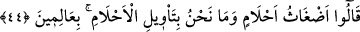
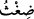
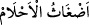
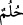
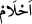
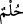

ve hayret içerisinde kalarak gördüğü rüyayı ve rüyada yaptıklarını Şeyh-i Ekber (k.s.)’a
anlattı. Şeyh-i Ekber adamdaki büyük rahatsızlığı görünce: “O’nu nerede gördün?” diye
sordu. “Satın aldığım evde gördüm.” deyince: “Orası gasbedilmiş bir mülktür. Allah
meşrû hakkı temsil etmektedir. Sen burasının durumuna bakmadan, şerîatın hakkını tam
yerine getirmeden burayı satın almışsın.” Adam durumu iyice araştırıp öğrendi ki burası
mescidin vakfına âidken gasp yoluyla satılmış. Ama o bunu araştırıp öğrenmemiş. İşin
aslı anlaşılınca, orayı mescidin vakfına iâde etti ve istiğfarda bulundu.
Herhalde Şeyh-i Ekber bu rüyayı gören kişinin sâlih bir kimse olduğunu ve çok
rahatsız olduğunu bildiği için, bu rüyanın görenle ilgili olmadığını anladı ve Allah’ı
nerede gördüğünü sordu. İşte böyle bir rüya görüldüğü zaman, tevil edilmesi gerekir.
Ancak Allah’ın tecellîsi, güneş ve benzer cisimlerin beyaz, yeşil ve sâir nurlar gibi
nurlu bir görüntü şeklinde olursa, görülen bu sûreti gördüğümüz hal üzere bırakırız.
Tıpkı Hak Teâlâ’yı âhirette göreceğimiz zamanda olduğu gibi. Çünkü bu görme bizim
istîdadımız kadar olur. Mertebe ve makamları iyi anla ki zâhir ve bâtına riâyet
konusunda ayakların kaymasın.
Bir hadiste şöyle buyrulur: “Hak eksiklik ifâde eden bir sûrette tecellî edince onu
inkâr ederler, kemal ve azamet ifade eden bir sûrette tecellî ettiği zaman da O’nu
kabul eder ve O’na secde ederler.”[45]
İster makbûl bir sûrette ister merdûd bir sûrette olsun, tâbir edilmeye muhtaç
rüyâların kendi hâlinde bırakılmayıp yorumlanması gerekir. Çünkü rüyanın vatanı
(mevtın) misâl âlemidir ki tâbir edilmeyi gerektirir. Bu sebeple Mısır kralı: “Eğer rüya
yorumluyorsanız, benim rüyamı da bana yorumlayınız.” demiştir.
44. (Yorumcular) dediler ki: “Bunlar karmakarışık düşlerdir. Biz böyle düşlerin
yorumunu bilenlerden değiliz.
Bu cümle, açıklama yapmak için olan başlangıç cümlesidir. Sanki “Bu ileri gelenler
krala ne cevap verdiler?” diye bir soru sorulmuş ve cevap olarak şöyle denilmiştir:
Yorumcular “dediler ki: “Bunlar karmakarışık” yani doğruyu göstermeyen, bâtıl
“düşlerdir.” Ya nefsin telkîni ya da şeytanın vesvesesidirler. Çünkü bir hadiste vârid
olduğu üzere “Rüya üç çeşittir: Allah’tan olan rüya, şeytandan olup insanı üzen rüya,
kişinin kendi kendine yaptığı telkînlerin sonucu görülen rüya.”[46]
“__WORD__” ,ı
kelimesinin çoğuludur. el-Kamûs’ta şöyle denilir: “__WORD__”, kurusu
yaşına karışmış bir demet ota denir. “__WORD__” ise karışık olduğu için
yorumlanması doğru olmayan rüyalardır.
“__WORD__”, “__WORD__” ve “__WORD__” kelimesinin çoğuludur. Aslı ve hakîkatı olmayan yalancı